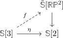
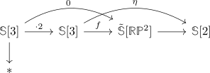
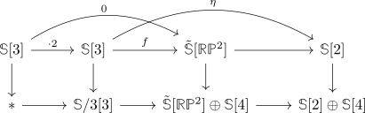
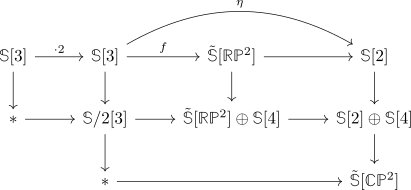
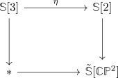
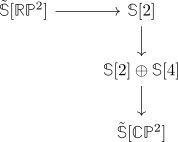
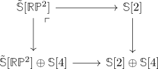

pi_1(S/2)
Proposition
The
Proof
Recall that there exists a long exact sequence
and that $\tilde{\mathbb{S}}[\mathbb{R}\mathbb{P}^{2}] \simeq \mathbb{S}/2$
so choose a lift of $\eta \in \pi_1(\mathbb{S})$, i.e. a factorization

It suffices to show that $f$ is not \(2\)-torsion. We proceed to use contraposition, i.e., assume that $2 \cdot f = 0$.
Then consider the diagram

Then we may left kan extend this diagram to get

We may further left kan extend to get

Now let's pass to $\mathbb{F}_2$ cohomology: We claim that the right map $\mathbb{S}[2] \rightarrow \tilde{\mathbb{S}}[\mathbb{C}\mathbb{P}^2]$ is an isomorphism on $H^2(-,\mathbb{F}_2)$: This follows as

is a pushout square, so comparing long exact sequences on homology suffices. It follows by degree-reasons, that $\mathbb{S}[2] \oplus \mathbb{S}[4] \rightarrow \tilde{\mathbb{S}}[\mathbb{C}\mathbb{P}^2]$ is also an isomorphism on $H^2(-,\mathbb{F}_2)$, since the $H^2(-,\mathbb{F}_2)$ isomorphism $\tilde{\mathbb{S}}[\mathbb{C}\mathbb{P}^2] \rightarrow \mathbb{S}[2]$ factors through $\mathbb{S}[2] \oplus \mathbb{S}[4]$.d
Moreover, the map
is an isomorphism on $H^2(-,\mathbb{F}_2)$ (cf. nontrivial map from RP2 to S2 is an f2 cohomology isomorphism )
In other words: the maps

are isomorphisms on $H^2(-,\mathbb{F}_2)$.
Observe that

is a pushout by some glueing lemma for infinity pushouts / glueing lemma for infinity pullbacks.
Hence we may use mayer vietoris of singular cohomology to get that the